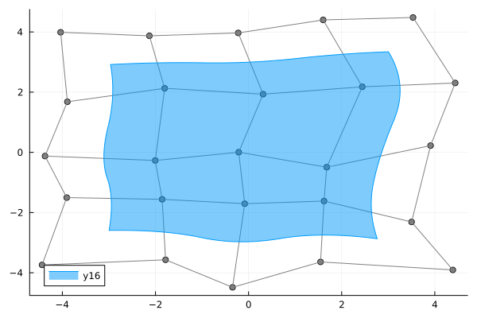
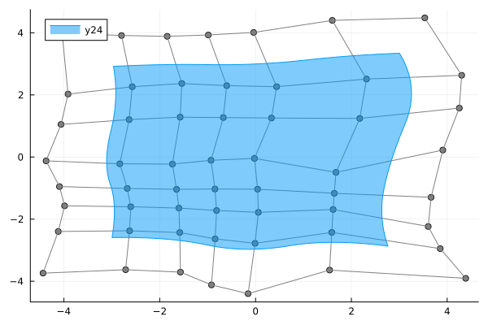
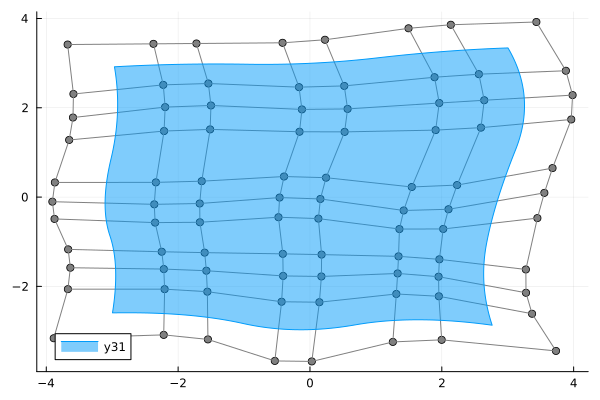

Refinement
Setup
using BasicBSpline
using BasicBSplineExporter
using StaticArrays
using PlotsExample
Define original manifold
p = 2 # degree of polynomial
k = KnotVector(1:8) # knot vector
P = BSplineSpace{p}(k) # B-spline space
rand_a = [SVector(rand(), rand()) for i in 1:dim(P), j in 1:dim(P)]
a = [SVector(2*i-6.5, 2*j-6.5) for i in 1:dim(P), j in 1:dim(P)] + rand_a # random
M = BSplineManifold(a,(P,P)) # Define B-spline manifold
gr()
plot(M)
h-refinement (knot insertion)
Insert additional knots to knot vectors without changing the shape.
julia> k₊ = (KnotVector([3.3,4.2]), KnotVector([3.8,3.2,5.3])) # additional knot vectors(KnotVector([3.3, 4.2]), KnotVector([3.2, 3.8, 5.3]))julia> M_h = refinement(M, k₊) # refinement of B-spline manifoldBSplineManifold{2, (2, 2), StaticArraysCore.SVector{2, Float64}, Float64, Tuple{BSplineSpace{2, Float64, KnotVector{Float64}}, BSplineSpace{2, Float64, KnotVector{Float64}}}}(StaticArraysCore.SVector{2, Float64}[[-4.436481525222188, -3.7392559679567654] [-4.118268299116978, -2.3974117050021446] … [-3.9140778173271045, 2.02747657297094] [-4.037719953640843, 3.989570689798291]; [-2.71176928574438, -3.6287319046417164] [-2.6290028888369674, -2.3754195103813136] … [-2.5737646016809177, 2.2630448636082017] [-2.798066419130518, 3.913009777996155]; … ; [1.5459602679993494, -3.640027067554792] [1.590734112983347, -2.426832143716899] … [2.3162362491479245, 2.510716406024899] [1.6019837034157864, 4.399759245537201]; [4.387041414974148, -3.906158146682025] [3.855379387558674, -2.949536744482456] … [4.3026314483063555, 2.6310250793110312] [3.5324898804805147, 4.480663191353303]], (BSplineSpace{2, Float64, KnotVector{Float64}}(KnotVector([1.0, 2.0, 3.0, 3.3, 4.0, 4.2, 5.0, 6.0, 7.0, 8.0])), BSplineSpace{2, Float64, KnotVector{Float64}}(KnotVector([1.0, 2.0, 3.0, 3.2, 3.8, 4.0, 5.0, 5.3, 6.0, 7.0, 8.0]))))julia> plot(M_h)Plot{Plots.GRBackend() n=24}

p-refinement (degree elevation)
Increase the polynomial degrees of B-spline manifold without changing the shape.
julia> p₊ = (Val(1), Val(2)) # additional degrees(Val{1}(), Val{2}())julia> M_p = refinement(M, p₊) # refinement of B-spline manifoldBSplineManifold{2, (3, 4), StaticArraysCore.SVector{2, Float64}, Int64, Tuple{BSplineSpace{3, Int64, KnotVector{Int64}}, BSplineSpace{4, Int64, KnotVector{Int64}}}}(StaticArraysCore.SVector{2, Float64}[[-3.886813349222267, -3.1612732212917094] [-3.6719448123392495, -2.0619867347898286] … [-3.5879903868524994, 2.309297638539688] [-3.6759035109489457, 3.4163923373612977]; [-2.2184960220645995, -3.0857493395558553] [-2.2048640913335458, -2.062131116895187] … [-2.2254561302182037, 2.5132434928959264] [-2.374099077021053, 3.4320249474102065]; … ; [1.9980992923218517, -3.1967019681462028] [1.9553502919752563, -2.2213414096199484] … [2.562176541233417, 2.7522355439177604] [2.1365486690288553, 3.859574005643621]; [3.7320323146385306, -3.4453931102416706] [3.369041162958896, -2.61257339707004] … [3.8820565546258057, 2.82935075924812] [3.4345114188550863, 3.921236386672008]], (BSplineSpace{3, Int64, KnotVector{Int64}}(KnotVector([1, 2, 3, 3, 4, 4, 5, 5, 6, 6, 7, 8])), BSplineSpace{4, Int64, KnotVector{Int64}}(KnotVector([1, 2, 3, 3, 3, 4, 4, 4, 5, 5, 5, 6, 6, 6, 7, 8]))))julia> plot(M_p)Plot{Plots.GRBackend() n=31}
